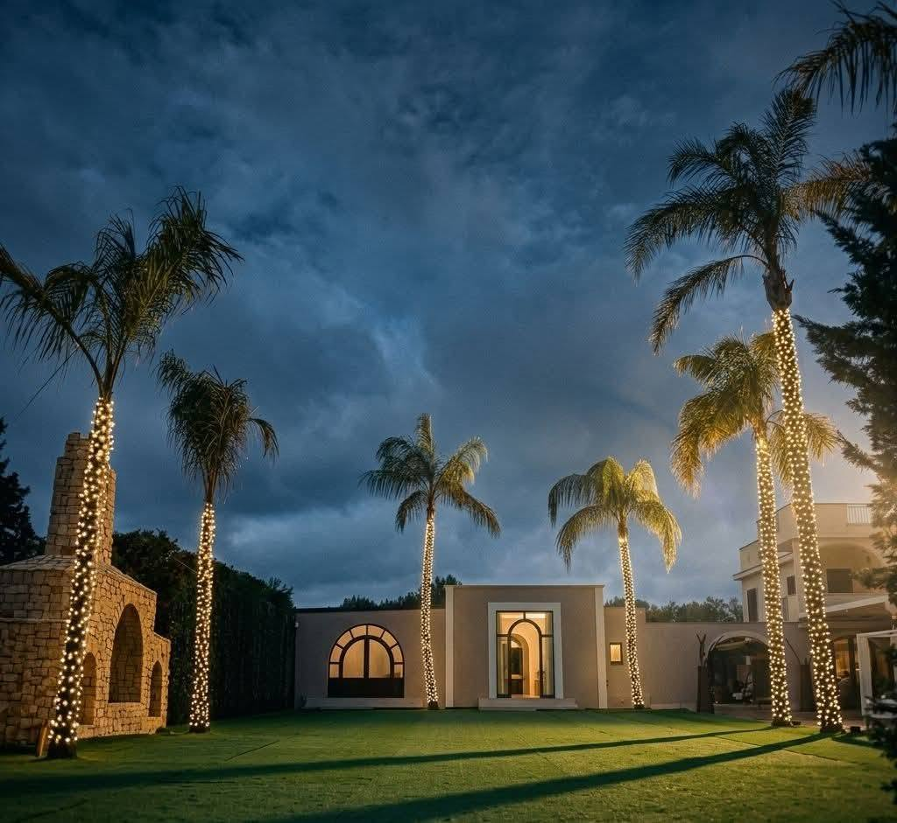
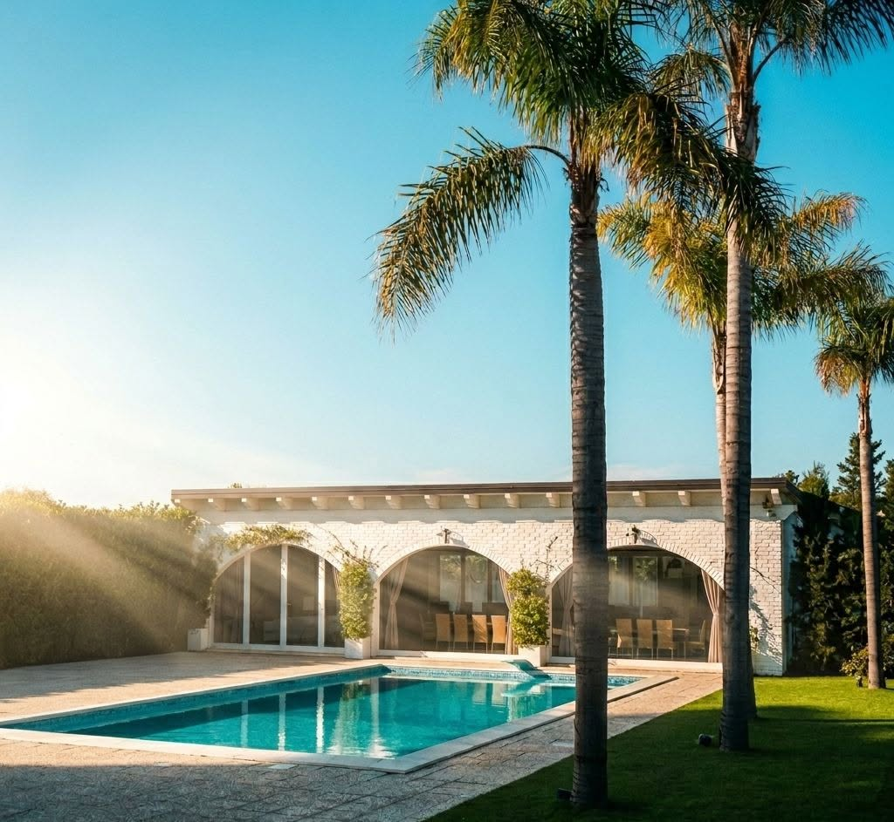

Corte Salentina
Pergola, ulivo e divani bianchi. Si comincia qui con l'aperitivo, prima di spostarsi in sala o a bordo piscina.
Restaurant & Banqueting
Sala ricevimenti a Terlizzi, tra palme illuminate, piscina e corte salentina.


Pergola, ulivo e divani bianchi. Si comincia qui con l'aperitivo, prima di spostarsi in sala o a bordo piscina.

Piscina, lettini a baldacchino e le arcate della sala che si specchiano nell'acqua. Cene e serate di festa.

Pareti in pietra, tavoli apparecchiati e luci sospese. Il ricevimento al coperto, in ogni stagione.

Dal pranzo alla serata, in giardino o in sala.
Cerimonie e pranzi di famiglia, con torta e allestimento.
Dai diciotto anni alle ricorrenze di una vita.
Raccontaci cosa festeggi, ne parliamo insieme.

Opzioni fisse, con la possibilità di alternare le portate.
Solo se ci avvisate prima dell'evento. All'ultimo momento non possiamo garantirle.
Visite e feste su prenotazione telefonica.
SP 56 km 7,070 (Molfetta - Ruvo di Puglia)